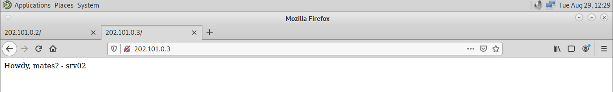

Intro
Howdy-do? Artikel kali ini akan membahas rsync dan crontab juga sedikit konfigurasi dasar pada Debian 11. Kenapa mereka sering bekerja berdampingan dan kapan mungkin kita hanya perlu menggunakan salah satu dari mereka.
Mari kita mulai dengan memahami konsep dasar lalu meningkat ke langkah-langkah konfigurasi rsync dan crontab di Debian 11. Jadi, apa itu rsync dan crontab?.
rsync
rsync (Remote Synchronization)
rsync adalah alat yang sangat berguna untuk menyalin dan menyinkronkan data di lingkungan Linux dan Unix. Ini memiliki kemampuan untuk melakukan transfer data lokal atau jarak jauh dengan efisiensi tinggi. rsync bekerja dengan membandingkan file di sumber dan tujuan, dan hanya mentransfer data yang berbeda antara keduanya. Berikut adalah beberapa poin utama tentang rsync :
Cara kerja :
rsync bekerja dengan membandingkan file di sumber dan tujuan, lalu hanya mengirim data yang berbeda antara keduanya, yang menghemat bandwith dan waktu. Selain itu juga dapat mengkompresi data selama transfer.
Keuntungan :
Efisiensi dalam mengirim data karena hanya mengirim 'yang berubah' saja, sehingga hemat bandwith dan waktu. Sinkronisasi yang akurat dengan memastikan bahwa sumber dan tujuan memiliki hasil identik setelah operasi sinkronisasi dilakukan. Dan kelebihan dalam transfer nya pun mumpuni menggunakan SSH dimana Transfer melalui SSH dapat digunakan rsync untuk transfer data yang aman melalui jaringan.
Penggunaan umum :
Biasanya rsync digunakan untuk membuat salinan data baik secara lokal maupun server jarak jauh, sinkronisasi folder, dan juga replikasi server.
cron
cron dan crontab
cron adalah daemon (layanan latar belakang) di sistem Linux yang digunakan untuk menjalankan tugas-tugas yang dijadwalkan secara berkala. Crontab adalah alat yang digunakan untuk membuat, mengelola, dan melihat daftar tugas yang dijadwalkan oleh cron. Berikut adalah beberapa poin utama tentang cron :
Cara kerja :
Pengguna dapat membuat entri dalam tabel cron untuk menjalankan skrip atau perintah pada waktu tertentu atau dalam interval waktu tertentu.
Keuntungan :
Otomatisasi tugas-tugas rutin seperti backup, pemrosesan data, dan pemeliharaan sistem. Waktu penjadwalan dengan pengguna memiliki kendali penuh atas kapan tugas-tugas berjalan sesuai waktu penjadwalan yang diinginkan. Laporan yang dapat dipantau melalui log atau email.
Penggunaan umum :
Biasanya digunakan untuk kegiatan yang butuh penjadwalan seperti, backup berkala, pembersihan log, updating sistem.
Topologi dan Skenario
Sinkronkan tampilan website Server 1 dan Server 2 setiap 2 menit sekali dan pastikan bahwa Server 2 selalu mengikuti perubahan tampilan website yang dilakukan Server 1.
Langkah 1: Preparation
Sediakan 2 virtual machine yang akan bertindak sebagai server
Konfigurasikan IP Address pada kedua VM
Install package pada kedua VM
| No. | Package | Keterangan |
|---|---|---|
| 1 | php7.4 | Ini adalah paket PHP versi 7.4, yang merupakan bahasa pemrograman yang digunakan untuk mengembangkan situs web dinamis. PHP memungkinkan kamu untuk membuat halaman web interaktif. |
| 2 | apache2 | Ini adalah server web Apache versi 2. Server web Apache digunakan untuk menyajikan halaman web kepada pengguna melalui protokol HTTP. |
| 3 | libapache2-mod-php | Ini adalah modul Apache yang memungkinkan server Apache untuk menjalankan kode PHP. Ini diperlukan agar Apache dapat memproses skrip PHP. |
| 4 | rsync | Ini adalah alat sinkronisasi file yang digunakan untuk menyalin dan menyinkronkan file antara dua lokasi, baik di dalam server yang sama atau di server yang berbeda. |
| 5 | cron | Ini adalah layanan penjadwalan tugas di sistem Linux. Cron memungkinkan kamu untuk menjalankan tugas-tugas secara terjadwal, seperti menjalankan perintah atau skrip pada waktu tertentu. |
| 6 | ssh | Ini adalah protokol keamanan yang digunakan untuk mengakses dan mengontrol server jarak jauh melalui koneksi terenkripsi. SSH digunakan untuk mengamankan akses ke server dan untuk menjalankan perintah dari jarak jauh. |
Konfigurasi default SSH dengan izin root diperbolehkan pada kedua VM

Buat kunci keygen di VM srv01
Salin kunci ke VM tujuan (srv02)
Are you sure you want to continue connection (yes/no/[fingerprint])? jawab 'yes'
masukkan password srv02
Sehingga muncul keterangan seperti berikut

Sekarang buat kunci keygen di VM srv02 dan salin kunci ke VM tujuan (srv01)

Sampai muncul keterangan seperti berikut
Langkah 2: Server Web
Konfigurasikan Server Web Apache2 di srv01 terlebih dahulu
Arahkan Documentroot ke path berikut (menyesuaikan)

Disable-kan file konfigurasi default Apache2
Enable-kan file konfigurasi yang kita gunakan
Buat konten index.php di dalam direktori yang diarahkan pada Documentroot sebelumnya
Restart Apache2
Konfigurasikan Server Web Apache2 di srv02
Jangan lupa untuk men-disable dan enable file konfigurasi juga restart service Apache2
Di Srv02 tidak perlu membuat konten index.php di /var/www/php ini kita biarkan kosong dulu, karena Srv02 akan mensinkronkan dirinya dengan Srv01.
Langkah 3 : Crontab dan Rsync
Konfigurasi file Crontab untuk membuat penjadwalan sinkronisasi setiap 2 menit sekali
Pilih editor teks, defaultnya adalah nano (1). Tapi bisa juga pakai vim (2)
Di baris paling bawah terdapat parameter dari crontab
| No. | Parameter | Penjelasan | Penggunaan |
|---|---|---|---|
| 1 | m | Minute (menit) | 0 - 59 |
| 2 | h | Hour (jam) | 0 - 23 |
| 3 | dom | Day Of Month (tanggal) | 1 - 31 |
| 4 | mon | Month (bulan) | 1-12 |
| 5 | dow | Day Of Week (hari) | 0-6 (dimulai dari hari minggu '0' terkadang '7' juga mewakilkan hari minggu di beberapa sistem) |
| 6 | command | Perintah | Kita bisa menambahkan perintah yang akan dilakukan Cron, kali ini kita akan memasukkan perintah/command rsync |
Di baris paling bawah dapat diketikkan seperti ini untuk crontab dan rsync
| Crontab | Penjelasan |
|---|---|
| */2 | Bagian pertama dari format dan mengacu pada "menit" dimana angka 2 berarti perintah akan dijalankan setiap 2 menit sekali |
| * | Bagian kedua mengacu pada "jam", tanda "*" berarti perintah dapat dijalankan setiap jam |
| * | Bagian ketiga mengacu pada "tanggal", tanda (*) berarti perintah dijalankan setiap hari dalam sebulan |
| * | Bagian keempat mengacu pada "bulan", tanda (*) berarti perintah dijalankan setiap bulan |
| * | Bagian kelima mengacu pada "hari", tanda (*) berarti perintah dijalankan setiap hari dalam seminggu |
| Rsync | Penjelasan |
|---|---|
| rsync -avze ssh | Perintah utama yang digunakan untuk sinkronisasi opsi "-a" sebagai mode arsip yang memastikan seluruh atribut seperti hak akses dan lainnya dipertahankan saat proses sinkronisasi. opsi "-v" mengaktifkan mode verbose yang akan menampilkan output lebih terperinci. opsi "-z" mengaktifkan kompresi data agar mengurangi penggunaan bandwith. opsi "-e" mengganti shell eksekusi default atau menentukan protokol yang digunakan dalam koneksi antara srv01 dan srv02. Karena kita menggunakan ssh maka diikuti dengan perintah "ssh". |
| root@202.101.0.2:/var/www/php/ | Server yang datanya akan disalin, menggunakan IP Address dan user untuk mendefinisikan sumber data dan mengambil data dari direktori /var/www/php/ |
| /var/www/php | Tujuan atau lokasi tempat menyimpan data salinan (direktori lokal di sistem kita) |
Tutup dan simpan file crontab hingga ada keterangan seperti berikut
Hasil Sinkronisasi di Server
Setelah 2 menit, direktori /var/www/php yang kosong tadi sekarang sudah ada file index.php yang dipastikan isinya sama dengan Srv01
Hasil Sinkronisasi di Client
Perbandingan pertama keduanya jam 12.27, sesuai dengan konten index.php
Perbandingan kedua pada jam 12.29, kita mencoba mengubah tampilan Srv01 dan belum diikuti oleh Srv02

Setelah 2 menit Srv02 mengikuti perubahan dari Srv01
Perbandingan ketiga pada jam 12.33, kembali merubah tampilan Srv01
Tampilan di 2 menit berikutnya
Kesimpulan
rsync dan crontab memiliki peran penting dan sangat berguna dalam mengoptimalkan sistem Linux, karena itu mereka masih relevan untuk zaman sekarang ini. rsync memungkinkan kita untuk menyinkronkan data dengan efisiensi tinggi, sementara cron dan crontab memungkinkan kita menjalankan tugas berjadwal sesuai dengan kebutuhan.
Menggabungkan keduanya dapat memberikan solusi otomatisasi yang kuat untuk berbagai keperluan seperti backup, sinkronisasi, dan masih banyak lagi. Dengan pemahaman yang baik tentang keduanya, kita dapat mengelola tugas-tugas secara efisien dan efektif menggunakan Debian 11 maupun distro Linux lainnya.
Selamat mencoba untuk mengelola dan mengotomatisasi tugas-tugasmu dengan rsync dan crontab! Semoga artikel ini membantu kamu memahami dan memanfaatkan potensi penuh dari keduanya dalam mengelola sistem Linux terutama Debian 11.
Penjelasan tambahan
Untuk penggunaan rsync dan crontab, kita tidak selalu harus menggunakan keduanya bersamaan. Pilihan untuk menggunakan salah satu atau keduanya kembali kepada spesifikasi kebutuhan kita. Misalnya,
- Hanya menggunakan rsync, jika kita hanya perlu menjalankan sinkronisasi data secara manual dengan kata lain tidak ada kebutuhan jadwal tertentu, kita bisa jalankan rsync saja.
- Lalu Hanya menggunakan crontab, jika kita hanya perlu menjalankan tugas terjadwal tanpa melibatkan sinkronisasi apapun dengan siapapun, maka kita dapat menggunakan crontab untuk menjadwalkan perintah atau skrip sesuai kebutuhan.
- Dan untuk Menggabungkan keduanya, jika kita perlu menjadwalkan sinkron data secara otomatis. Seperti pada tutorial kali ini.
(akan terlihat jika menggunakannya terpisah dengan crontab)
(bisa menggunakan -e nc misalnya untuk netcat. Secara default shell eksekusi nya adalah shell lokal yang ada di sistem tempat kita jalanin perintah rsync.
kenapa pake ssh biar lebih secure